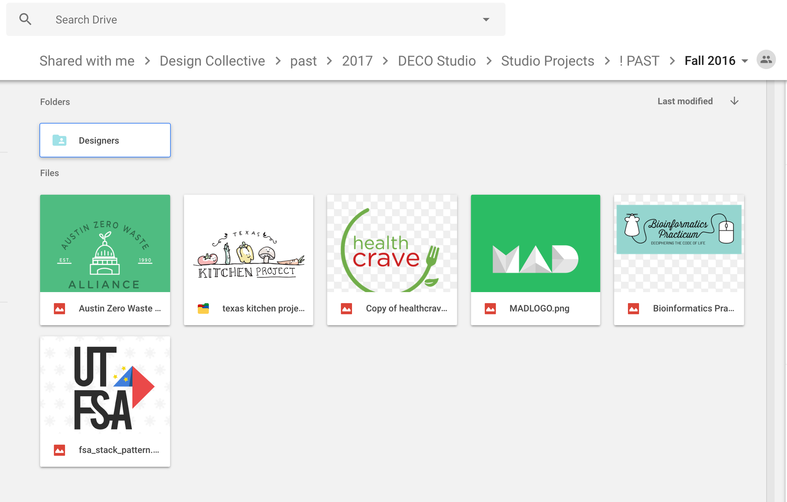
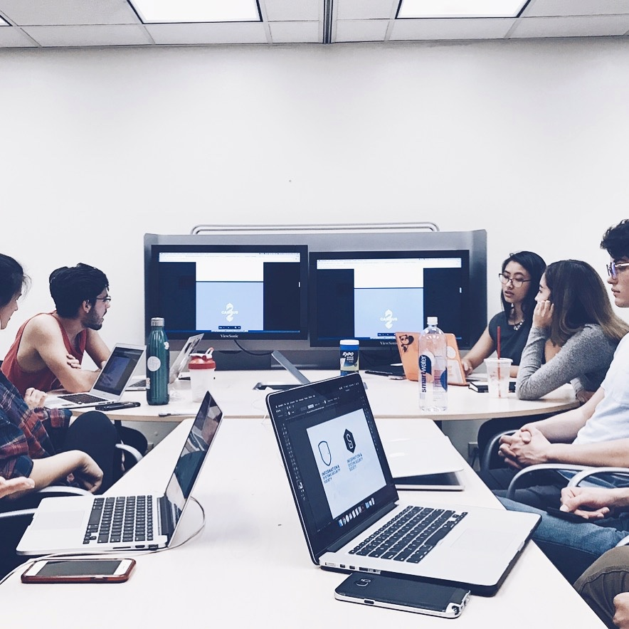
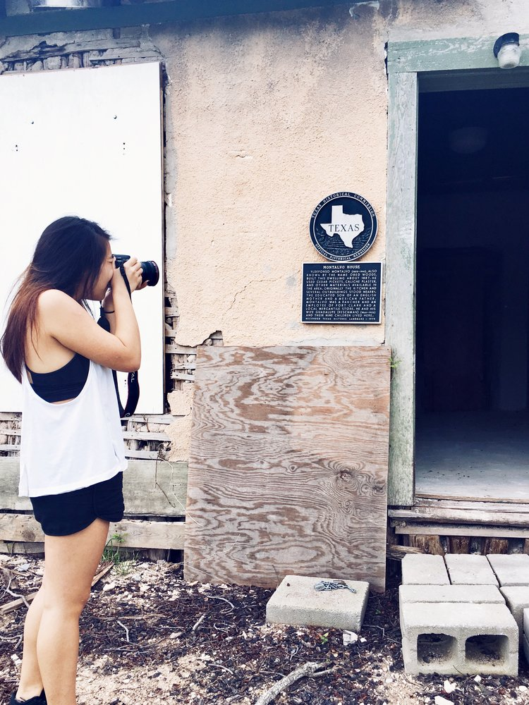
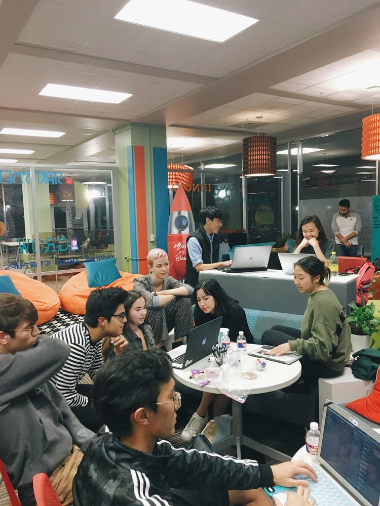

designing a design agency
One of my major goals of my college career was to bridge the gap between the demand for design services among student organizations and local startups and the supply of talent at the design school. // CHECK US OUT

FALL 2016:
After a whole freshman year of business school, I decided I needed to explore the design world — as a hobby, of course. I interviewed for a leadership position in a new student organization called Design Collective that began my design career without me even knowing it. The story starts my sophomore year, where I was placed at the head of a client-facing group of design students.
As a sophomore accounting major leading a group of incredibly talented designers, I failed miserably.Though each of the four designers in Studio were incredibly talented, we only finished six projects that were actually implemented by our clients.
I never pushed the designers to do the work on time, nor did I set a great example myself. Since we were a part of a bigger organization, client work was not our main mission. On top of pushing out visual designs, we were mentoring new designers and serving as administrative leadership in DECO. If we were to continue as a branch, we had to restructure.
SPRING 2017:
That winter, I reflected (yes, actually reflected. There's a Google doc and everything.) on the future of DECO Studio:
- Ask for help when you need it. I decided I couldn't handle the workload along with my particularly heavy course work that semester, so midway through, I asked for a co-director. She turned out to be a blessing and more, and is now doing UX design at Amazon!
- Get over your imposter syndrome. Working with junior and senior design majors really got to me when I first began. I was too scared and shy to tell anyone to change aspects of their drafts, even though the whole point of the group was that we could critique each other for better final designs. As the semester went on, I gained more and more experience and confidence just by working with such a diversely talented group. On top of that, I realized that we all have our own fortes and style — also, no one ended up hating me for suggesting that they try a lighter shade of blue.
- Stop giving your clients work you aren't happy with. I guarantee you, even if you're showing them a suggestion that they made just to prove to them how bad it looks, 100% of the time, they'll love it. You're the designer! Stand by that specific line width till the ends of the earth.
After months of learning, growing, and changing, in my second semester as co-director, we grew from four to 15 members and completed almost 30 projects. These projects ranged from simple t-shirts for student organizations to a logo and web design for a small historical landmark.
 This was the semester I felt comfortable sitting at the front of the table (with that dumb look on my face and my glasses slipping halfway down my nose bridge, but regardless), making suggestions and arguing for why a particular brand should have a certain feel or what makes a specific composition feel a little bit off.
The semester ran much more smoothly. Designers were responsible for contacting the client when the client fills out a response form. Designer met once a week for critiques and scheduled client meetings on their own time. Not only did we end up with much better-looking designs, but we also all learned so much from one another.
The new Studio was a huge improvement from the previous semester.
FALL 2017:
However, this version of DECO Studio did not go without its own set of problems. With increasing demand from clients, designers were over capacity during exam weeks. To counter that, we brought on more designers. The more designers, though, the less tight-knit the group felt and the harder it was for me to keep up with everyone's progress. Designers also wanted to be working on more than just visual design and start looking into UI/UX, web development, and more.
So, With the help and support of DECO Studio's designers, my co-founder and I created Tandem Studio, a design agency that offers affordable design solutions to students and local small businesses. By the fall semester of 2017, Tandem Studio already has more than 25 talented designers and currently has 31 in-progress projects.
We began to focus more on comprehensive projects that include not only visual design but also design thinking concepts. My co-founder, Coleman, and I hand-picked a group of diverse designers that could handle illustrations, coding, photography, videography, animation, and UI/UX. We also partnered with UT Austin's first interdisciplinary incubator that connects business, technology, and design, to get hands-on experience working with technical startup teams.
For the new year, my co-founder and I made goals to bring in a few new features:
- A cohesive brand. An image for ourselves is crucial to our success and sustainability.
- Grant-based design services for pro-bono projects. We are being more selective with our projects, so we can concentrate on a few, really comprehensive projects.
- A closer-knit group of designers with a larger core leadership team. We want to foster the best culture so that we can push out our best work in the most efficient way.
- More training for our designers. This would range from client interactions to UX research processes, hosted by senior members and industry professionals.
AND FINALLY:
As of my senior year in college, I’ve passed off the director role to my talented friends, Efren Martinez and Minh Cao. My personal goal was to make sure the agency runs and grows organically and without a watchful eye — and seeing as I barely show up to meetings anymore (I swear, because I want to make sure the organization continues after my graduation, not because I’m lazy), my work here is done and I could not be more proud of this insanely talented and dedicated Tandem Family.